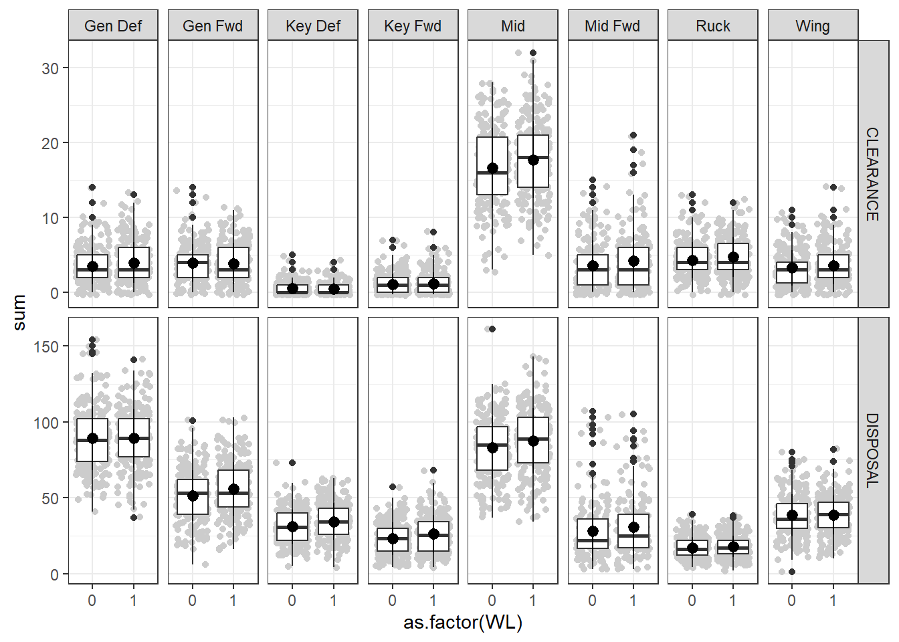
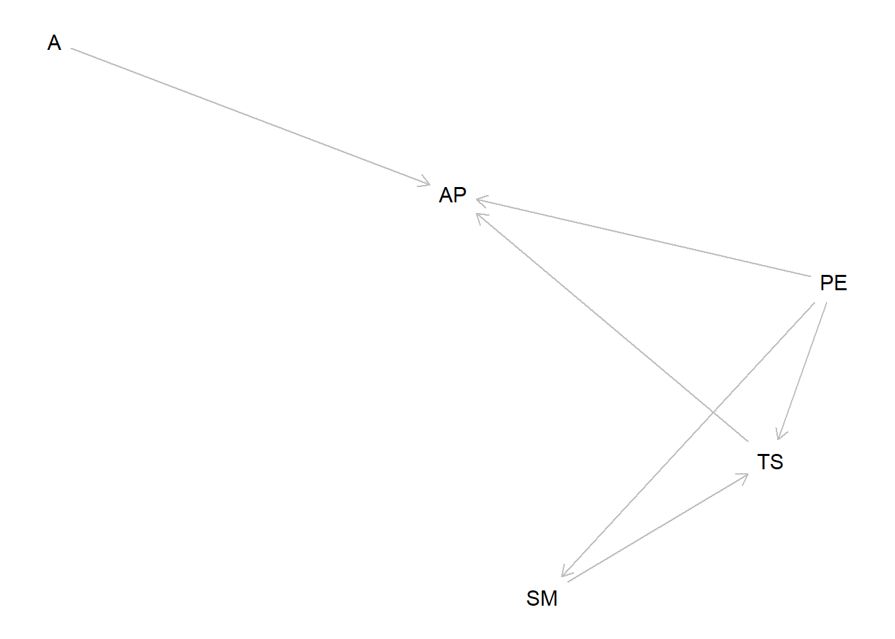

pacman::p_load(data.table,tidyverse,htmlTable,factoextra,cluster,GGally)3 Module 2
3.1 Recap from previous week
Lets load some data first. This time to make it easier lets see if you can load data from my github.
Our current outline for the next couple of weeks looks like the below.
Introduction into R programming language and getting started with some descriptive statistics. (last week)
Understanding key terms; Exploratory analysis, Supervised vs Unsupervised problems, regression vs classification, prediction vs association.
A quick note on distributions - Supervised regression and classification problems using a generalized linear model framework. (Hypothesis testing) (Next module)
3.1.1 Loading packages and data
We will load some data that we used from the previous session.
urlfile="https://raw.githubusercontent.com/R2mu/GWS_DSPR/main/data/mod2data.csv"
data1 <- fread(urlfile)Lets just remind ourselves of the dataset we are using
str(data1)Classes 'data.table' and 'data.frame': 9936 obs. of 44 variables:
$ SEASON_ID : int 2023 2023 2023 2023 2023 2023 2023 2023 2023 2023 ...
$ MATCH_ID : int 266569840 266569840 266569840 266569840 266569840 266569840 266569840 266569840 266569840 266569840 ...
$ GROUP_ROUND_NO : int 1 1 1 1 1 1 1 1 1 1 ...
$ VENUE_NAME : chr "MCG" "MCG" "MCG" "MCG" ...
$ PERSON_ID : int 250395 270146 270896 280819 290627 290847 293813 294036 294592 294674 ...
$ FULLNAME : chr "Jack Riewoldt" "Ed Curnow" "Trent Cotchin" "Dylan Grimes" ...
$ SQUAD_NAME : chr "Richmond" "Carlton" "Richmond" "Richmond" ...
$ Position : chr "Key Fwd" "Mid Fwd" "Mid Fwd" "Key Def" ...
$ OPP_SQUAD_NAME : chr "Carlton" "Richmond" "Carlton" "Carlton" ...
$ SQUAD_MARGIN : int 0 0 0 0 0 0 0 0 0 0 ...
$ WL : int 0 0 0 0 0 0 0 0 0 0 ...
$ WLD : int 0 0 0 0 0 0 0 0 0 0 ...
$ BEHIND : int 0 0 0 0 1 0 3 0 0 1 ...
$ CLEARANCE : int 1 1 4 0 5 1 2 8 1 0 ...
$ CONTESTED_MARK : int 4 0 0 1 0 2 4 0 0 0 ...
$ CONTESTED_POSSESSION : int 10 2 11 4 13 10 9 14 4 2 ...
$ CONTESTED_POSSESSION_POST: int 9 1 4 4 5 8 7 4 3 2 ...
$ CONTESTED_POSSESSION_PRE : int 1 1 7 0 8 2 2 10 1 0 ...
$ DISPOSAL : int 12 14 18 12 23 23 10 28 17 11 ...
$ EFFECTIVE_DISPOSAL : int 10 8 12 11 17 13 6 20 12 9 ...
$ EFFECTIVE_HANDBALL : int 3 2 7 4 10 6 1 14 4 2 ...
$ EFFECTIVE_KICK : int 7 6 5 7 7 7 5 6 8 7 ...
$ GOAL : int 1 0 0 0 0 1 3 0 0 0 ...
$ HANDBALL : int 3 2 9 4 13 8 1 18 6 2 ...
$ HARD_BALL_GET : int 0 1 3 1 1 4 2 3 0 1 ...
$ HITOUT : int 1 0 0 0 0 0 1 0 0 0 ...
$ IN50_KICK : int 3 4 3 0 2 7 0 1 3 1 ...
$ INSIDE_50 : int 4 4 3 0 2 8 1 2 3 2 ...
$ INTERCEPT : int 3 1 3 6 5 1 0 2 2 4 ...
$ KICK : int 9 12 9 8 10 15 9 10 11 9 ...
$ LONG_KICK : int 0 1 3 2 4 3 1 0 3 3 ...
$ MARK : int 6 6 3 5 4 6 6 5 5 4 ...
$ MARK_ON_LEAD : int 1 0 1 0 0 1 1 0 0 1 ...
$ METRES_GAINED_EFF : int 139 182 178 89 158 230 118 39 139 156 ...
$ MISSED_TACKLE : int 0 0 1 1 1 0 0 0 0 0 ...
$ PLY_PRESS_PTS : num 39.3 17.4 33.5 12 25.5 ...
$ POINTS : int 6 0 0 0 1 6 21 0 0 1 ...
$ RATING : num 18.2 3.9 8.2 6.4 7.9 13.7 13.2 12.5 2.3 4.2 ...
$ SMOTHER : int 1 0 1 0 1 0 0 0 2 0 ...
$ SPOIL : int 0 0 1 3 0 0 3 0 0 4 ...
$ TACKLE : int 5 4 3 2 1 0 0 4 3 2 ...
$ TOTAL_GAINED_METRES : num 198 300 264 111 316 ...
$ TURNOVER : int 3 5 5 1 4 7 2 2 3 1 ...
$ UNCONTESTED_MARK : int 2 6 3 4 4 4 2 5 5 4 ...
- attr(*, ".internal.selfref")=<externalptr> head(data1)|>htmlTable()| SEASON_ID | MATCH_ID | GROUP_ROUND_NO | VENUE_NAME | PERSON_ID | FULLNAME | SQUAD_NAME | Position | OPP_SQUAD_NAME | SQUAD_MARGIN | WL | WLD | BEHIND | CLEARANCE | CONTESTED_MARK | CONTESTED_POSSESSION | CONTESTED_POSSESSION_POST | CONTESTED_POSSESSION_PRE | DISPOSAL | EFFECTIVE_DISPOSAL | EFFECTIVE_HANDBALL | EFFECTIVE_KICK | GOAL | HANDBALL | HARD_BALL_GET | HITOUT | IN50_KICK | INSIDE_50 | INTERCEPT | KICK | LONG_KICK | MARK | MARK_ON_LEAD | METRES_GAINED_EFF | MISSED_TACKLE | PLY_PRESS_PTS | POINTS | RATING | SMOTHER | SPOIL | TACKLE | TOTAL_GAINED_METRES | TURNOVER | UNCONTESTED_MARK | |
|---|---|---|---|---|---|---|---|---|---|---|---|---|---|---|---|---|---|---|---|---|---|---|---|---|---|---|---|---|---|---|---|---|---|---|---|---|---|---|---|---|---|---|---|---|
| 1 | 2023 | 266569840 | 1 | MCG | 250395 | Jack Riewoldt | Richmond | Key Fwd | Carlton | 0 | 0 | 0 | 0 | 1 | 4 | 10 | 9 | 1 | 12 | 10 | 3 | 7 | 1 | 3 | 0 | 1 | 3 | 4 | 3 | 9 | 0 | 6 | 1 | 139 | 0 | 39.3 | 6 | 18.2 | 1 | 0 | 5 | 197.6 | 3 | 2 |
| 2 | 2023 | 266569840 | 1 | MCG | 270146 | Ed Curnow | Carlton | Mid Fwd | Richmond | 0 | 0 | 0 | 0 | 1 | 0 | 2 | 1 | 1 | 14 | 8 | 2 | 6 | 0 | 2 | 1 | 0 | 4 | 4 | 1 | 12 | 1 | 6 | 0 | 182 | 0 | 17.4 | 0 | 3.9 | 0 | 0 | 4 | 300.3 | 5 | 6 |
| 3 | 2023 | 266569840 | 1 | MCG | 270896 | Trent Cotchin | Richmond | Mid Fwd | Carlton | 0 | 0 | 0 | 0 | 4 | 0 | 11 | 4 | 7 | 18 | 12 | 7 | 5 | 0 | 9 | 3 | 0 | 3 | 3 | 3 | 9 | 3 | 3 | 1 | 178 | 1 | 33.45 | 0 | 8.2 | 1 | 1 | 3 | 263.7 | 5 | 3 |
| 4 | 2023 | 266569840 | 1 | MCG | 280819 | Dylan Grimes | Richmond | Key Def | Carlton | 0 | 0 | 0 | 0 | 0 | 1 | 4 | 4 | 0 | 12 | 11 | 4 | 7 | 0 | 4 | 1 | 0 | 0 | 0 | 6 | 8 | 2 | 5 | 0 | 89 | 1 | 12 | 0 | 6.4 | 0 | 3 | 2 | 111 | 1 | 4 |
| 5 | 2023 | 266569840 | 1 | MCG | 290627 | Dion Prestia | Richmond | Mid | Carlton | 0 | 0 | 0 | 1 | 5 | 0 | 13 | 5 | 8 | 23 | 17 | 10 | 7 | 0 | 13 | 1 | 0 | 2 | 2 | 5 | 10 | 4 | 4 | 0 | 158 | 1 | 25.5 | 1 | 7.9 | 1 | 0 | 1 | 316.3 | 4 | 4 |
| 6 | 2023 | 266569840 | 1 | MCG | 290847 | Dustin Martin | Richmond | Gen Fwd | Carlton | 0 | 0 | 0 | 0 | 1 | 2 | 10 | 8 | 2 | 23 | 13 | 6 | 7 | 1 | 8 | 4 | 0 | 7 | 8 | 1 | 15 | 3 | 6 | 1 | 230 | 0 | 25.5 | 6 | 13.7 | 0 | 0 | 0 | 432.1 | 7 | 4 |
3.1.2 Quick summary
Lets do some quick summaries in a similar fashion to what we did last time. To start of with I am going to have a look at some position summaries by win vs loss across key statistics.
Firstly to make the analysis a little simpler I am going to make the dataframe into what is called a long format. Now to be fair it is possible to summarize keeping the data in its current wide format but being confident in manipulating data.frames from wide to long and vice versa is very useful for data analysis in general.
Before I do that however, lets just check something
unique(data1$Position)[1] "Key Fwd" "Mid Fwd" "Key Def" "Mid" "Gen Fwd" "Wing" "Gen Def"
[8] "Ruck" "" You may notice a “” is returned this represents a blank value, which ideally there should not be any. Lets have a look a little deeper
data1|>
filter(Position=="")|>
select(FULLNAME,PERSON_ID,GROUP_ROUND_NO) FULLNAME PERSON_ID GROUP_ROUND_NO
1: Willie Rioli 296225 2
2: Willie Rioli 296225 5
3: Willie Rioli 296225 7
4: Willie Rioli 296225 8
5: Willie Rioli 296225 11
6: Willie Rioli 296225 13
7: Willie Rioli 296225 19
8: Willie Rioli 296225 21
9: Willie Rioli 296225 22
10: Willie Rioli 296225 23
11: Willie Rioli 296225 24
12: Willie Rioli 296225 25
13: Willie Rioli 296225 26Okay this is because he was referred to as “Junior Rioli” that year which means ideally I need to fix the initial join i did from the previous week to just be PERSON_ID and SEASON_ID and not include FULLNAME.
I know however, that he played as “Gen Fwd” that year so lets quickly update that in our database.
data1 <- data1|>
mutate(Position=ifelse(SEASON_ID==2023&PERSON_ID==296225,
"Gen Fwd",Position))We can check out work with
unique(data1$Position)[1] "Key Fwd" "Mid Fwd" "Key Def" "Mid" "Gen Fwd" "Wing" "Gen Def"
[8] "Ruck" Okay lets now look to melt the data and drop some columns for the sake of it.
data.frame(names(data1)) names.data1.
1 SEASON_ID
2 MATCH_ID
3 GROUP_ROUND_NO
4 VENUE_NAME
5 PERSON_ID
6 FULLNAME
7 SQUAD_NAME
8 Position
9 OPP_SQUAD_NAME
10 SQUAD_MARGIN
11 WL
12 WLD
13 BEHIND
14 CLEARANCE
15 CONTESTED_MARK
16 CONTESTED_POSSESSION
17 CONTESTED_POSSESSION_POST
18 CONTESTED_POSSESSION_PRE
19 DISPOSAL
20 EFFECTIVE_DISPOSAL
21 EFFECTIVE_HANDBALL
22 EFFECTIVE_KICK
23 GOAL
24 HANDBALL
25 HARD_BALL_GET
26 HITOUT
27 IN50_KICK
28 INSIDE_50
29 INTERCEPT
30 KICK
31 LONG_KICK
32 MARK
33 MARK_ON_LEAD
34 METRES_GAINED_EFF
35 MISSED_TACKLE
36 PLY_PRESS_PTS
37 POINTS
38 RATING
39 SMOTHER
40 SPOIL
41 TACKLE
42 TOTAL_GAINED_METRES
43 TURNOVER
44 UNCONTESTED_MARKdtLong = data1|>
melt(id.vars = 1:12)|>
## going to remove some columns
filter(!variable %in%c("POINTS","GOAL","BEHIND"))Lets now create a quick summary of the stats. Now to reiterate what I mentioned last week, this is where R can be really useful. Effectively, we need to create multiple levels of aggregation to get to the level we want and in excel for example this would require multiple pivot tables.
dtlongSum <- dtLong|>
group_by(GROUP_ROUND_NO,SQUAD_NAME,Position,variable,WL)|>
summarise(sum = round(sum(value,na.rm = T),2))|>
# the above effectively summarised to the position level
ungroup()|>
group_by(Position, variable,WL)|>
summarise(mu = round(mean(sum),2),
sd = round(sd(sum),2))`summarise()` has grouped output by 'GROUP_ROUND_NO', 'SQUAD_NAME', 'Position',
'variable'. You can override using the `.groups` argument.
`summarise()` has grouped output by 'Position', 'variable'. You can override
using the `.groups` argument. # The above then averages the statistics via WL for each position over the season so effectively removes GROUP level data
## As I was building it I would use the below as an example of checking as I go
#filter(SQUAD_NAME=="Adelaide Crows"&variable=="CLEARANCE"&Position=="Mid")
head(dtlongSum)|>htmlTable()| Position | variable | WL | mu | sd | |
|---|---|---|---|---|---|
| 1 | Gen Def | CLEARANCE | 0 | 3.53 | 2.47 |
| 2 | Gen Def | CLEARANCE | 1 | 3.95 | 2.72 |
| 3 | Gen Def | CONTESTED_MARK | 0 | 1.6 | 1.49 |
| 4 | Gen Def | CONTESTED_MARK | 1 | 1.57 | 1.26 |
| 5 | Gen Def | CONTESTED_POSSESSION | 0 | 24.42 | 7.5 |
| 6 | Gen Def | CONTESTED_POSSESSION | 1 | 24.28 | 7.26 |
The above is still quite a long data.frame with 464 rows which might not be the easiest way to see the differences so lets re shape it again to see if it helps.
dcast.data.table(setDT(dtlongSum),Position+variable~WL,value.var = "mu")|>
filter(variable=="DISPOSAL")|>
mutate(difference = round(`1`-`0`,1))|>
htmlTable()| Position | variable | 0 | 1 | difference | |
|---|---|---|---|---|---|
| 1 | Gen Def | DISPOSAL | 89.28 | 89.18 | -0.1 |
| 2 | Gen Fwd | DISPOSAL | 51.44 | 55.79 | 4.4 |
| 3 | Key Def | DISPOSAL | 30.98 | 34.39 | 3.4 |
| 4 | Key Fwd | DISPOSAL | 23.05 | 26.11 | 3.1 |
| 5 | Mid | DISPOSAL | 83.1 | 87.57 | 4.5 |
| 6 | Mid Fwd | DISPOSAL | 28.22 | 30.66 | 2.4 |
| 7 | Ruck | DISPOSAL | 17.06 | 17.94 | 0.9 |
| 8 | Wing | DISPOSAL | 38.56 | 38.76 | 0.2 |
Maybe we want to plot the differences
dtLong|>
group_by(MATCH_ID,SQUAD_NAME,WL,Position,variable)|>
summarise(sum = sum(value))|>
filter(variable%in%c("DISPOSAL","CLEARANCE"))|>
#filter(Position%in%c("Mid","Mid Fwd","Wing"))|>
ggplot(aes(as.factor(WL),sum))+
geom_jitter(col="gray80")+
geom_boxplot()+
stat_summary(fun.data = "mean_sdl",
geom = "pointrange",
fun.args = list(mult=1),col="black")+
facet_grid(vars(variable), vars(Position),scales = "free_y")+
theme_bw()`summarise()` has grouped output by 'MATCH_ID', 'SQUAD_NAME', 'WL', 'Position'.
You can override using the `.groups` argument.
3.1.3 Important note
You guys are the experts here in being able to double check what numbers to expect. I want to strongly reiterate how much of coding is just checking your work as you go, are you getting numbers you expect? As I mentioned the beauty of R being modular is it easily allows for you to continuously check as you build.
3.1.4 Final exploration
Lets have a look at the global relationships across a range of variables.
sum2 = dtLong|>
group_by(GROUP_ROUND_NO,SQUAD_NAME,variable)|>
summarise(sum = round(sum(value),2))|>
pivot_wider(values_from = sum,
names_from = variable)|>
ungroup()`summarise()` has grouped output by 'GROUP_ROUND_NO', 'SQUAD_NAME'. You can
override using the `.groups` argument.sum2|>head()|>htmlTable()| GROUP_ROUND_NO | SQUAD_NAME | CLEARANCE | CONTESTED_MARK | CONTESTED_POSSESSION | CONTESTED_POSSESSION_POST | CONTESTED_POSSESSION_PRE | DISPOSAL | EFFECTIVE_DISPOSAL | EFFECTIVE_HANDBALL | EFFECTIVE_KICK | HANDBALL | HARD_BALL_GET | HITOUT | IN50_KICK | INSIDE_50 | INTERCEPT | KICK | LONG_KICK | MARK | MARK_ON_LEAD | METRES_GAINED_EFF | MISSED_TACKLE | PLY_PRESS_PTS | RATING | SMOTHER | SPOIL | TACKLE | TOTAL_GAINED_METRES | TURNOVER | UNCONTESTED_MARK | |
|---|---|---|---|---|---|---|---|---|---|---|---|---|---|---|---|---|---|---|---|---|---|---|---|---|---|---|---|---|---|---|---|
| 1 | 1 | Adelaide Crows | 33 | 9 | 111 | 77 | 34 | 318 | 242 | 89 | 153 | 101 | 26 | 40 | 39 | 52 | 62 | 217 | 55 | 102 | 6 | 3992 | 4 | 613.35 | 178.6 | 6 | 30 | 40 | 6077.2 | 56 | 93 |
| 2 | 1 | Brisbane Lions | 38 | 4 | 116 | 55 | 61 | 264 | 181 | 72 | 109 | 102 | 33 | 41 | 35 | 40 | 52 | 162 | 62 | 52 | 6 | 3879 | 10 | 650.4 | 161.2 | 7 | 37 | 46 | 5309.8 | 66 | 48 |
| 3 | 1 | Carlton | 32 | 18 | 148 | 100 | 48 | 341 | 241 | 92 | 149 | 120 | 32 | 26 | 33 | 45 | 79 | 221 | 67 | 97 | 0 | 4119 | 10 | 580.65 | 186.2 | 8 | 29 | 55 | 5963.4 | 75 | 79 |
| 4 | 1 | Collingwood | 43 | 10 | 135 | 79 | 56 | 372 | 286 | 120 | 166 | 143 | 18 | 45 | 52 | 62 | 62 | 229 | 62 | 105 | 7 | 4611 | 8 | 594.45 | 250.5 | 8 | 32 | 52 | 6293 | 61 | 95 |
| 5 | 1 | Essendon | 32 | 11 | 128 | 83 | 45 | 414 | 322 | 142 | 180 | 159 | 28 | 20 | 54 | 66 | 63 | 255 | 45 | 131 | 6 | 4607 | 6 | 521.25 | 264.1 | 4 | 30 | 37 | 6993.8 | 59 | 120 |
| 6 | 1 | Fremantle | 28 | 14 | 146 | 102 | 44 | 437 | 334 | 145 | 189 | 179 | 30 | 45 | 56 | 65 | 92 | 258 | 63 | 136 | 6 | 4615 | 4 | 633.3 | 200.2 | 11 | 24 | 53 | 6581.1 | 82 | 122 |
cols <- c("METRES_GAINED_EFF", "PLY_PRESS_PTS","KICK","HANDBALL","MARK","CONTESTED_POSSESSION","TACKLE")
forPairs <- sum2|>
select(!1:2)|>
select(cols)Warning: Using an external vector in selections was deprecated in tidyselect 1.1.0.
ℹ Please use `all_of()` or `any_of()` instead.
# Was:
data %>% select(cols)
# Now:
data %>% select(all_of(cols))
See <https://tidyselect.r-lib.org/reference/faq-external-vector.html>.ggpairs(forPairs)+theme_light()
3.2 Exploratory and Descriptive analysis
The above is an example of both what we would consider EXPLORATORY and DESCRIPTIVE analysis. These analysis techniques are usually first steps we take when analysing data.
Exploratory analysis can be really useful for thing such as
Identifying outliers or anomalies in the data (very important)
Observe if the problem is tractable/solvable (very important)
Assess distributional assumptions of the data (more on this next week)
Visual assessment of relationships or patterns that may exist within the data
Where as descriptive analysis refers to summarizing the main variables of interest. You are not necessarily looking to infer a relationship or hypothesis per se but just are reporting relevant summary statistics e.g. mean, max, min, range, standard deviation, median, sum, proportion,count relating to a question at hand.
” The average disposal count for mid fielders was ….. for 2023 and …. for 2024.”
” The proportion of time player x played up forward was …. vs ….. played down back”
3.3 A quick disclaimer regarding exploratory analysis
While exploratory analysis is a powerful tool that is used almost subconsciously in our daily lives, it is important to exercise caution and maintain mental error control. The human brain is notoriously good at finding and justifying relationships in data that may genuinely just be noise. To highlight this problem, an additional chapter called “Multiple testing” was added to the second version of the ISLR book i recommend the previous module.
Hypothesis testing is one type of tool that aims to help reduce the risk of being misled by noise. Ultimately, however, you bear a significant responsibility to develop a hypothesis or causal framework that justifies why you think the observed trend may indeed be valid.
Whilst, developing causal models can quickly become an extensive process a simply starting point is developing a Directed Acyclic Graph (DAG). A DAG is a graphical representation of a hypothetical model outlining causal effects. Outlined below is a quick example of how one may develop a dag.
We want to model the relationships between the following variables:
Parental Education (PE)
Student’s Motivation (SM)
Time Spent Studying (TS)
Attendance (A)
Academic Performance (AP)
Below we are going graphical represent relationships that we believe to impact these variables.
Plot coordinates for graph not supplied! Generating coordinates, see ?coordinates for how to set your own.
3.3.1 DAG Structure:
For the above figure we would interpret it like so:
Parental Education (PE) affects both Student’s Motivation (SM) and Time Spent Studying (TS).
Student’s Motivation (SM) influences Time Spent Studying (TS).
Time Spent Studying (TS) and Attendance (A) both affect Academic Performance (AP).
Parental Education (PE) also directly affects Academic Performance (AP).
While this may initially seem trivial, a well-thought-out DAG can help identify situations where causal analysis approaches can be explored using observational data—an area long thought to be exclusive to randomized controlled trials. See this paper by Dr Judd Kalkhoven an academic from WSU who gives some examples of causal modelling from an athlete injury perspective https://link.springer.com/article/10.1007/s40279-024-02008-1.
3.4 Supervised vs Unsupervised problems
3.4.1 Supervised Learning Overview
In our previous session, we explored our ability to predict score differential using a range of statistics. The simple linear model we examined was an example of a supervised regression problem. The easiest way to identify whether something can be thought of as a supervised problem is by determining whether you have a clear outcome of interest that you want to predict. If the answer is yes, then it is a supervised problem.
3.4.2 Types of Supervised Problems
In reality, most of the problems/questions you encounter will relate to predicting some quantity, whether it be an absolute number such as score differential (a regression problem), win vs. loss probability (a classification problem), or predicting the next action type, e.g., kick, handball, tackle (a multinomial classification problem).
Prediction of a number = Regression problem
Prediction of a class/category = Classification problem
3.4.3 Choosing a Model
There are often numerous models to answer the same regression or classification problem, and there will usually be trade-offs between certain models that you need to explore. A useful first step is asking yourself, “Is it important that I understand how the model made the prediction it did, or is it just important that the model can predict accurately?” This question can help you narrow down the scope of models you may use.

The above picture is taken from ISLR book I recommended (https://www.statlearning.com/) and it highlights some of these tradeoffs. Over the coming weeks we will explore models that exist along this continuum but I want you to also think of the x axis as dataset size required.
3.5 Unsupervised Problems
Let’s say, for example, that you don’t have a specific dependent/outcome variable that you are interested in predicting. Instead, you are more interested in exploring whether there are any interesting patterns, clusters, or groupings that exist within the data. You are not too concerned with how they are structured, just whether there is a structure. This would be considered an unsupervised learning problem.
3.5.1 Common Algorithms for Unsupervised Learning
Clustering Algorithms:
Aim to find multidimensional similarities between variables, grouping data points into clusters based on their features.
Examples: K-means clustering, hierarchical clustering, DBSCAN, GMM.
Principal Component Analysis (PCA):
Aims to find components that can best explain the variance between variables, reducing the dimensionality of the data while retaining most of the variance.
Useful for data visualization and simplifying complex datasets.
Association Rules / Market Basket Analysis:
Aim to find associations between items or transactions, identifying how frequently certain items or events occur together.
Example: Market basket analysis can reveal that customers who buy bread often buy butter as well.
3.5.2 Summary
Unsupervised learning is about discovering the inherent structure within your data without predefined labels or outcomes. It’s particularly useful when you want to explore and understand the underlying patterns or relationships in your dataset.
Below is a quick example where we are using a variant of the kmeans clustering algorithm.
## select some columns to analyse. I do suggest to do select only variables you are interested in. e.g. don;t just put everything in and hope for the best.
cols <- c("METRES_GAINED_EFF", "PLY_PRESS_PTS","KICK","HANDBALL","MARK","CONTESTED_POSSESSION","count")
### create a quick summary of all players from 2023
smalldf <- data1|>
group_by(FULLNAME,Position)|>
mutate(count = length(FULLNAME))|>
group_by(FULLNAME,Position)|>
## the below is a way where you can summarise in the wide format
summarise(across(all_of(cols), mean))|>
ungroup()|>
## going to remove players with less than 5 games
filter(!count<=5)|>
# dont need the count column after so going to remove
select(!count)`summarise()` has grouped output by 'FULLNAME'. You can override using the
`.groups` argument.## outside the scope of but we need to remove players name from being a column variable to being a row now.
smallerdf <- smalldf|>
column_to_rownames("FULLNAME")|>
select(!Position)
## We are going to compute a slightly more complicated kmeans algo
# the reasoning is a little complicated but it just better matches our data.
### compute gowers distance.
# this calcualtes how far away each player is from each other across all statistics and represents as one number.
dissimilarity_matrix <- daisy(smallerdf,
metric = "gower")
## convert to a matrix
gower_mat <- as.matrix(dissimilarity_matrix)
### find number of clusters within group. I know ahead of time that 3 is an okay number but usually you may need to explore a number of cluster sizes.
## below is the clustering algo we will use
set.seed(123) # For reproducibility
pam_result <- pam(gower_mat, k = 3)
## join computed cluster back on the inital dataframe
smalldf <- smalldf|>mutate(cluster = pam_result$clustering)
## lets plot the results
fviz_cluster(pam_result,geom = "text",
ellipse.type = "convex",
show.clust.cent = TRUE,
ggtheme = theme_classic(),
labelsize = 8)Lets get a feel for what differentiates the clusters.
clusterLong =setDT(smalldf)|>melt.data.table(id.vars = c("FULLNAME","Position","cluster"))
ggplot(clusterLong,aes(value,as.factor(cluster)))+
geom_jitter(aes(col=Position))+
stat_summary(fun.data = "mean_sdl",
geom = "crossbar",
fun.args = list(mult=1),col="black")+
facet_wrap(~variable,scales = "free",ncol = 3)+
theme_light()+
theme(legend.position = "top")Finally, a question you may have from this which players are most similar to another player in a multidimensional case.
Firstly, I need to create a helper function to do this. I know this may seem scary but I was able to do this within a couple of minutes of searching on google and using chatGPT.
# You don;t need to necessarily understand what this function does but it allows us to find the most similar players based off the multidimensioal calculation we did before.
find_most_similar <- function(df, gower_matrix, individual, n = 1) {
# Find the index of the selected individual
individual_index <- which(df$FULLNAME == individual)
# Get the distances for the selected individual
distances <- gower_matrix[individual_index, ]
# Set the distance to itself as Inf to exclude it from the nearest neighbors
distances[individual_index] <- Inf
# Find the indices of the n smallest distances
nearest_indices <- order(distances)[1:n]
# Include the selected individual in the result
all_indices <- c(individual_index, nearest_indices)
# Return the rows of the selected individual and nearest individuals
return(df[all_indices, ])
}Run the helper function
find_most_similar(smalldf, gower_mat, 'Toby Greene', n = 3)|>
mutate(across(where(is.numeric), round, 1))|>htmlTable()| FULLNAME | Position | METRES_GAINED_EFF | PLY_PRESS_PTS | KICK | HANDBALL | MARK | CONTESTED_POSSESSION | cluster | |
|---|---|---|---|---|---|---|---|---|---|
| 1 | Toby Greene | Gen Fwd | 217.6 | 30.4 | 12 | 5.7 | 4.4 | 7.7 | 2 |
| 2 | Christian Salem | Gen Def | 212.2 | 31.6 | 12.5 | 6.6 | 3.9 | 5.8 | 2 |
| 3 | Steele Sidebottom | Wing | 227.2 | 32.8 | 12.8 | 8 | 4.2 | 6.9 | 2 |
| 4 | Ben Ainsworth | Gen Fwd | 203 | 26.9 | 10.9 | 6.8 | 4.8 | 6.5 | 2 |
Always good to cross reference if you think these results make sense.
We will talk about some other use cases of unsupervised problems in later modules.
3.6 Practice exercises module 2
Think about questions you may have from datasets you have used. What would you classify your question as? e.g. ( supervised, unsupervised, regression or classification)
Could you defend or represent your problem as a DAG?
Can you think of any questions that might be appropriate for an unsupervised learning problem?